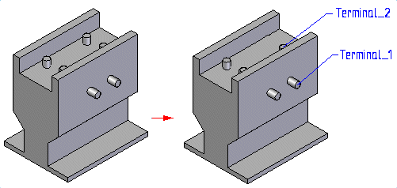

Assign component and terminal names
-
Choose Tools tab→Assistants group→Assign Terminals.
-
In the Assign Terminals dialog box, type a name in the Library part name field.
-
Click the New button.
-
Type a terminal name in the Name field.
-
Click the row containing the terminal.
-
Click the Set button.
-
In the graphics window, click a square, rectangular edge, circular edge or arc to assign the terminal to.
When you click the circular edge or arc, a balloon containing the name of the terminal is connected to the center point of the circular edge.

-
Click OK .
-
A file can contain only one component.
-
A component can contain multiple terminals and you can assign multiple terminals to a single circular edge or arc.
-
You can use the Clear All button to remove the component name and all terminal information from the Assign Terminals dialog box.
-
When you click OK the terminal balloon is automatically hidden. You can highlight, select, and edit the properties for the balloon.
When you select the balloon, it is displayed in the Select color and the Assign Terminals dialog box highlights the row for the terminal.
When you select a balloon, a command bar is displayed that you can use to edit the balloon. If you change the text of the balloon, the terminal name on the dialog box is updated to reflect the change.
You cannot delete a balloon directly. If you want to delete the balloon, highlight the row on the Assign Terminals dialog box and click Delete. Be aware that this deletes the terminal attribute along with the balloon.
-
You can use the Create PMI option to create PMI callouts for the component name and terminal names.
The PMI is not displayed while the Assign Terminals command is running. Once placed, you can edit or delete the PMI.
How do I
Use Harness Wizard to create a harness designEdit the definition of a wire harness conductor
Create a Harness report
Learn more
Creating a wire harness automaticallyUsing step 1 of the Harness Wizard
Using step 2 of the Harness Wizard
Using step 3 of the Harness Wizard
Mapping electrical component ids in PathFinder
Look up more details
Harness Wizard commandHarness Populate Options dialog box
Harness Wizard - Step 1 of 3
Harness Wizard - Step 2 of 3
Harness Wizard - Step 3 of 3
Linking 3D Electrical parts in Wiring Harness
Connection Options dialog box
Assign Terminals command
Assign Terminals dialog box
Properties command (Electrical Routing)
Properties dialog box (Electrical Routing)
Custom Attributes dialog box
Edit Definition command (Electrical Routing)
Edit Definition command bar
Harness Reports command
Harness Reports dialog box